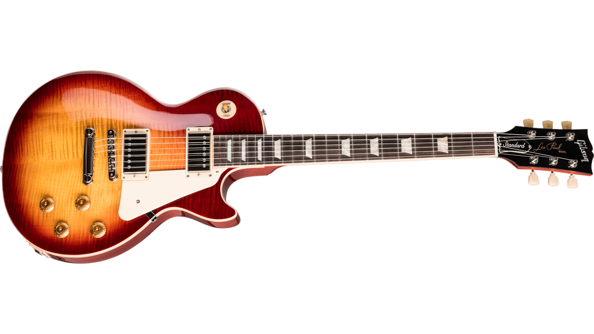

О компании Gibson
Орвилл Гибсон начал изготавливать инструменты в 1894 году и основал компанию в 1902 году как Gibson Mandolin-Guitar Mfg. Co. Ltd. в Каламазу, штат Мичиган, для производства инструментов семейства мандолин. Гибсон изобрел арочные гитары, сконструировав такой же тип резных, арочных топов, которые использовались на скрипках. К 1930-м годам компания также производила акустические гитары
флэттоп, Фолк-гитара с плоской верхней декой.
а также одну из первых коммерчески доступных электрогитар с полым корпусом, которую использовал и популяризировал Чарли Кристиан.
